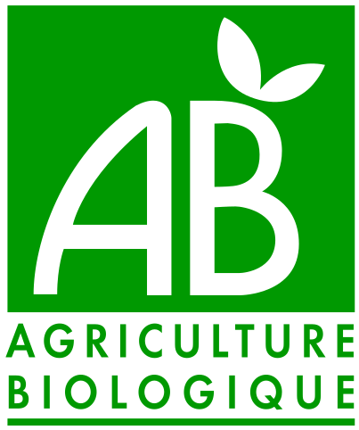

nuance végétale
Les 6 repères pour 100 g. Pas de note globale : c'est toi qui décides.
Les repères
| Repère | Atteint si… |
|---|
B12 et fer
- B12 : cherche « vitamine B12 », « cobalamine » ou « cyanocobalamine » dans les ingrédients : Enrichi ou Absente
- Fer : cherche « fer » ou un sel de fer (pyrophosphate ferrique, fumarate ferreux).
- Le fer des végétaux est mieux absorbé avec de la vitamine C (poivron, agrumes, kiwi).
Les ingrédients
- Le premier ingrédient (après l'eau) est la base : soja, blé, pois, champignon…
- Les allergènes sont mis en évidence, le plus souvent en gras.
Le bon réflexe
Compare le prix pour 20 g de protéines : prix au kilo × 2 ÷ protéines. Exemple : 14 €/kg et 15 g de protéines → 1,87 €.
Compare le prix pour 20 g de protéines : prix au kilo × 2 ÷ protéines. Exemple : 14 €/kg et 15 g de protéines → 1,87 €.
Pièges végan
- Ingrédients d’origine animale moins évidents : lactosérum, caséine, gélatine, miel, carmin (E120).
- « Peut contenir des traces de lait » = contamination possible en usine, pas un vrai ingrédient laitier.
- Le lait et les œufs sont obligatoirement mis en évidence dans les ingrédients (le plus souvent en gras).
Gluten caché
Le blé est mis en évidence en gras dans la liste d’ingrédients. Attention au gluten caché dans les céréales : seigle, avoine (si contamination croisée), blé, orge, triticale, épeautre, kamut.
Bio ? Repère ces logos

Le logo européen est accompagné d’un code de l’organisme de contrôle (ex. BE-BIO-01) et de l’origine des ingrédients (Agriculture UE / non UE).
Scanne pour ouvrir le décodeur
nuance-vegetal.github.io